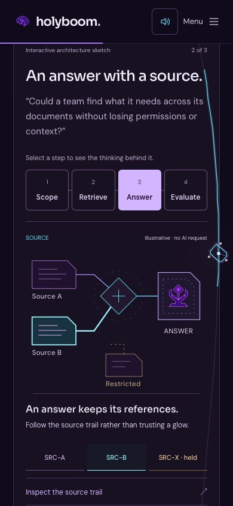
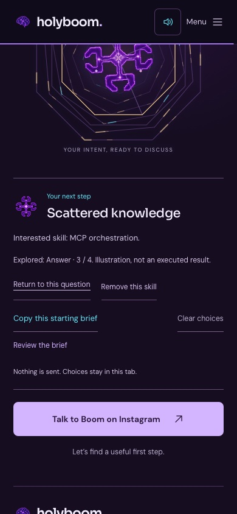

Follow the thought.
Inspect the proof.
Choose a challenge. Watch eligible inputs move toward an artifact, while a held input stays outside. Inspect a fictional source or a sample claim, then carry your question to the Portal. Your choices stay yours when the story moves backward.
Try the workbenchSee the destinationA traceable process
Select a step to see a short source-to-artifact transfer. Inspect SRC-A, SRC-B or the excluded SRC-X; each sample claim links back to its source. These are fictional teaching examples, not client evidence, model output or real approval.

Your chosen destination
Return to your exact question and step, or remove only the carried skill. The rest of the brief stays intact. Scrolling and source inspection do not overwrite your choices. Nothing is submitted.

Try the complete path
Scattered knowledge → Answer → SRC-X → trace a sample claim to SRC-A → carry a skill → Portal → Return to this question. The excluded input never becomes evidence, and returning never resets the choice.
Tap to start sound; scroll or use the existing controls. Piano, reactions/fireworks, line energy and atmosphere are independently adjustable. Fine-tune controls start at the previously approved balance.
Recorded fireworks, their long tails, Mozart note order, line-only current and all source artwork are retained. Surface light follows the existing particle/source positions. Each reflected color follows its own particle-source position. Repeating an already selected step no longer rebuilds the scroll story. Finite transfers stop when hidden; the original ambient motion remains.
Browser automation and touch emulation are not a physical iPhone listening or frame-rate test. The demo does not send information to a model or a server. Clipboard writes occur only when you choose Copy.
Release evidence ·
Design and limitations ·
Original audio credits